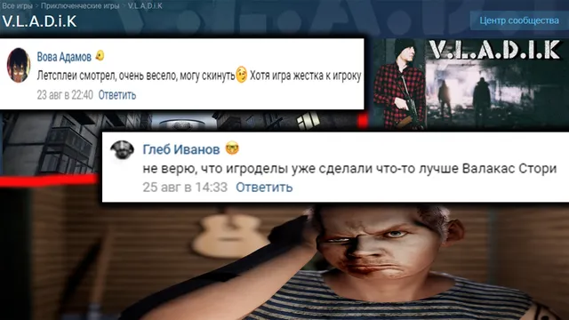
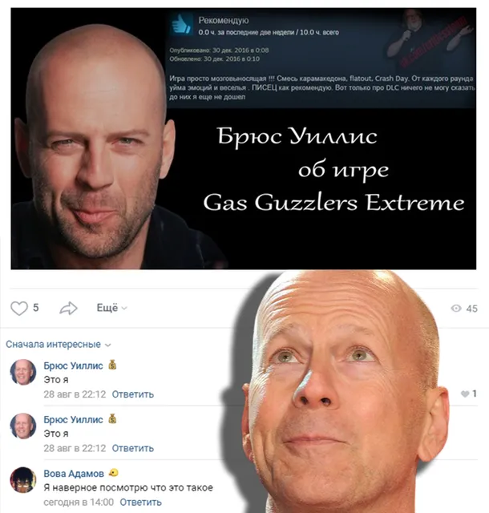

Ваши комментарии ВКонтакте 💢Добрый вечер, что ж, на этот раз комментариев еще меньше ☹ 30 августа 2020 · №439 в выгрузке стены · оригинал во ВКонтакте ↗  #ВашиКомментарии@criticssteam #7 💢Добрый вечер, что ж, на этот раз комментариев еще меньше ☹ 📝Пожалуйста, пишите больше! спасибо. 🔱Сегодня титул получают: [id191917835|Глеб Иванов] [id491132613|Брюс Уиллис] [id119602395|Вова Адамов] #ВашиКомментарии #7 ← Red Dead Redemption 2🌅Вот и кончается наше лето, но всё еще впереди! →